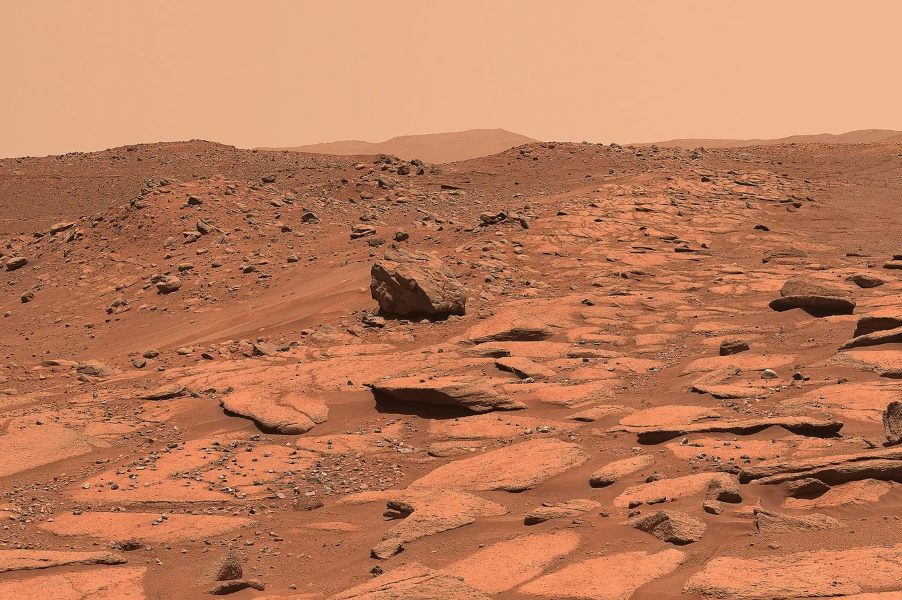

Mars, the fourth planet from the Sun, has long captured human imagination with its
striking
red hue and
mysterious surface.
Often called the Red Planet, its color comes from iron-rich dust that blankets its
terrain.
Mars is a cold, desert world, featuring the largest volcano in the solar system, Olympus Mons,
and a vast canyon system, Valles Marineris. Though its atmosphere is thin and mostly carbon dioxide,
evidence suggests that liquid water once flowed there. Today, Mars remains a primary target for
exploration, as scientists search for signs of past life and prepare for future human missions.
